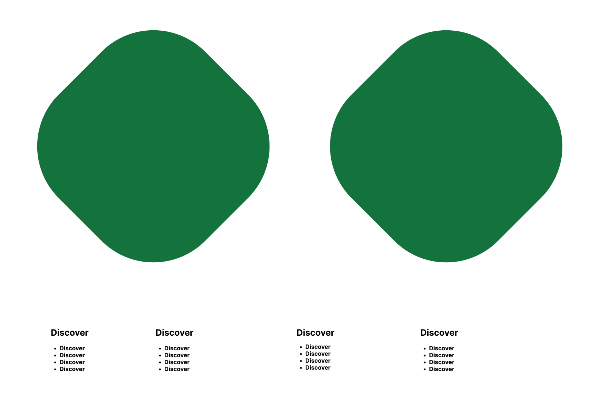
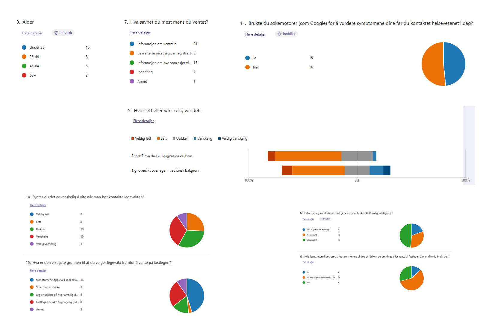
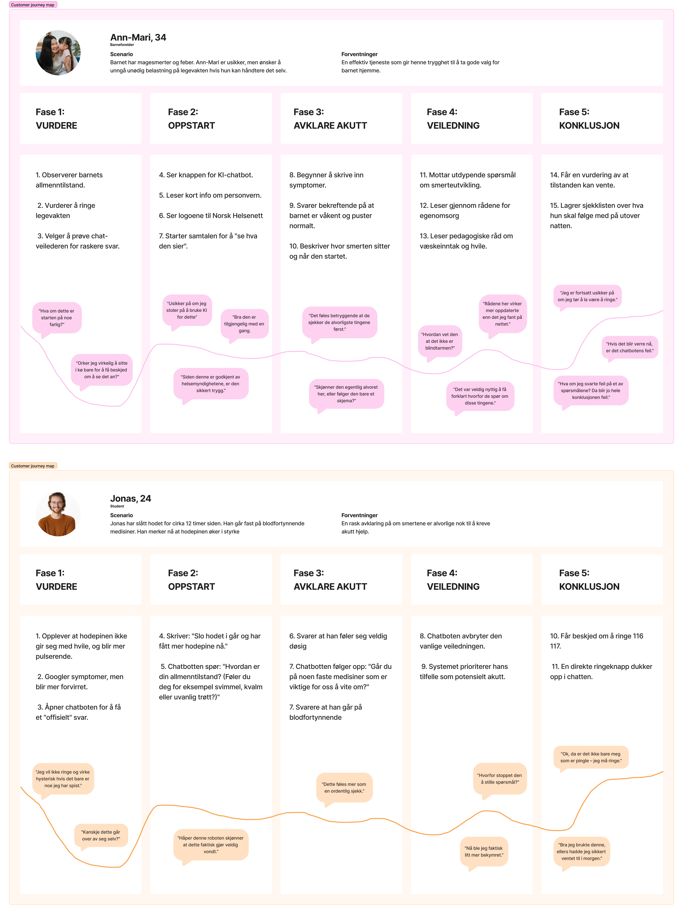
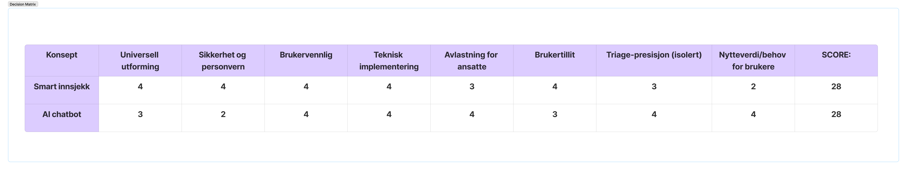
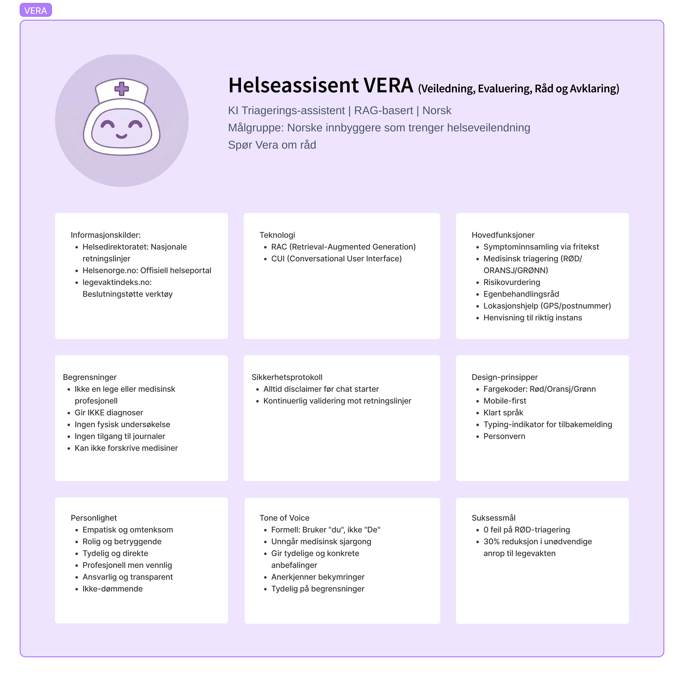
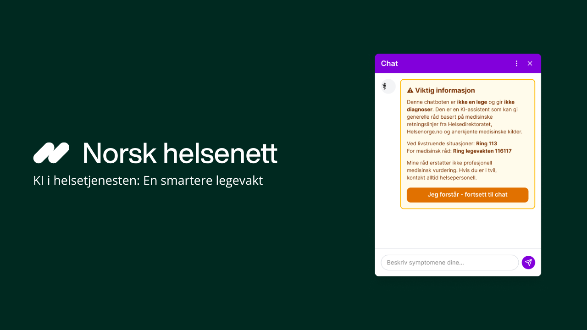

Designprosessen
Gjennom prosjektet har jeg hatt et delt ansvar for store deler av designprosessen, som inkluderte innsiktsarbeid og konseptutvikling, men jeg hadde hovedansvar for å designe og lage prototypen og planlegge brukertesting. Vi benyttet os av Double Diamond som rammeverk for å sikre en grundig forståelse av problemområdet.

Innsikt
Hovedtanken vår var å lage en løsning relatert til smart innsjekk på legevakten, så i innsiktsfasen begynte vi med å gjøre grundig desk research før vi gjennomførte intervjuer med flere helsepersonell på legevaktene. Etter intervjuene oppdaget vi at flere av helsepersonelle hadde andre smertepunkter enn vi trodde før intervjuene. Dermed byttet vi hovedfokus til å utforske noe av dette. Vi hadde også en undersøkelse hvor vi fikk kvantitativ data av brukere på legevakten. Vi endte med en dypere dykk i å forstå hvorfor brukere kontaktet legevakten

Brukerne er ofte i en situasjon der de ikke vet hvordan de skal tolke symptomer, og søker derfor bekreftelse. En annen viktig innsikt var knyttet til tillit. Flere uttrykte skepsis til KI i helsesammenheng, spesielt hvis systemet fremstår som upersonlig eller vanskelig å forstå. Dette gjorde tillit til en sentral faktor i videre designarbeid.
I define-fasen handlet det om å skape struktur i en stor mengde innsikt. Vi hadde samlet både kvantitative data og kvalitative intervjuer, og utfordringen var å identifisere hva som faktisk var viktig å ta videre.

Med enorme mengder data var den største utfordringen å snevre inn fokuset uten å miste helheten. For å systematisere funnene brukte vi et mulighetstre, som hjalp oss å koble brukerbehov til mulige løsninger. Gjennom dette arbeidet ble det tydelig at usikkerhet var en gjennomgående faktor – brukerne manglet ikke nødvendigvis informasjon, men trygghet i å tolke egen situasjon.

Persona
persona

Dette verktøyet hjalp oss å identifisere at chatboten måtte klare å tolke naturlig språk ("jeg har vondt i brystet") og stille relevante oppfølgingsspørsmål uten å virke klinisk eller skremmende. Vi landet på en problemstilling som handlet om å gi pasienter "riktig hjelp til riktig tid" ved å oversette kompleks medisinsk logikk til et enkelt og menneskelig språk.

Idéutvikling og konsepter
Dette var den mest teknisk krevende fasen. Helsenorge bruker et omfattende designsystem som internt kalles "Frankenstein". De hadde ingen design for selve chatboten da det var en tredjepartsløsning. Jeg tok ansvaret for å bygge opp et eget bibliotek i Figma fra bunnen av, da de eksisterende komponentene ikke støttet en kompleks chatbot-flyt. Jeg designet alt fra interaktive valgknapper til komplekse moduler, alt sømløst integrert i Helsenorges visuelle profil.
Siden Helsenorge sitt eksisterende designsystem ikke var tilpasset samtalebasert interaksjon, utviklet jeg også et eget sett med komponenter. Dette inkluderte blant annet svaralternativer, statusindikatorer og moduler for forklaringer underveis i dialogen.
For å ta de vanskeligste valgene brukte vi en Decision Matrix (beslutningsmatrise). Her veide vi ulike løsninger opp mot pasientsikkerhet, teknisk gjennomførbarhet og universell utforming. Skulle chatboten gi direkte råd, eller bare veilede? Ved å bruke dette verktøyet kunne vi begrunne hvorfor vi valgte bort visse funksjoner til fordel for de som var mest trygge og effektive for sluttbrukeren.

Prototyping

Løsningen
Løsningen vi utviklet er en KI-basert veileder integrert i Helsenorge, som hjelper brukere med å vurdere egen situasjon før de eventuelt kontakter legevakt.

Brukertesting
Vi gjennomførte brukertester der deltakerne gikk gjennom ulike scenarioer.
Hva har jeg lært fra dette prosjektet
Arbeidet med Norsk Helsenett har gitt meg verdifull erfaring med å designe for komplekse systemer der teknisk innovasjon møter strenge krav til sikkerhet:
- Arbeidet med designsystemet "Frankenstein" lærte meg å videreutvikle komplekse systemer uten å bryte helheten i tjenesten.
- Jeg har lært hvordan språkbruk og visuelle bekreftelser er helt avgjørende for brukeropplevelsen i KI-tjenester.